2026-11-14 · 已验收21/26保持不变。本页是只读审计，不重采、不重训、不重新计分。
登记配方为头部、胸部、第三视角三路RGB；均为固定机位，没有腕部相机。原视频通常640×480，策略通常224×224；逐checkpoint证据不全的条目在表中明确标为待核实。
确有样本视野不足：量筒胸部图顶部截断；部分旧源抬升时物体出画。Native重采的大瓶图与旧源不同，本页已区分。第三视角目标偏小，抓取有手指遮挡。不能据此假定全体正常，也不自动推翻既有实时渲染评测。
时长是训练记录长度：大多数旧源约4秒，Native大瓶约4.4–5.2秒。当前评测时限6秒。记录终点不是首次满足全部松手、退手、接触和保持判据的精确时刻。是否重采或调整时长由用户决定。
完整可见率没有逐帧分割及遮挡标注，暂为UNKNOWN。下图每机位仅抽首帧、中段代理、末帧，不能用三张图估计全数据集百分比。
时长列：中位 / 最短 / 最长（秒）；同一数据源不会因方法不同而重复采集。
| 物体 / 方法 | 机器人 | 策略相机 | 输入分辨率 | 示范时长 | 评测时限 | 证据状态 |
|---|---|---|---|---|---|---|
| 100mL烧杯 ACT | PsiBot | 待补历史checkpoint配置（登记配方预期头/胸/第三） | 待核实 | 4.00 / 4.00 / 4.07 | 6.00（当前冻结协议） | MISSING_RELEASE_CONFIG |
| 塑料量筒 DP | PsiBot | chest_camera_rgb / head_camera_rgb / third_camera_rgb | 224×224 | 4.00 / 4.00 / 4.00 | 6.00（当前冻结协议） | REGISTERED_SOURCE_TRAINING_CONFIG_NOT_EXACT_CHECKPOINT_EMBEDDED_CFG |
| 玻璃量筒 DP | PsiBot | chest_camera_rgb / head_camera_rgb / third_camera_rgb | 224×224 | 4.00 / 4.00 / 4.07 | 6.00（当前冻结协议） | REGISTERED_SOURCE_TRAINING_CONFIG_NOT_EXACT_CHECKPOINT_EMBEDDED_CFG |
| 大棕色试剂瓶 ACT | PsiBot | chest_camera / head_camera / third_camera | 224×224 | 4.87 / 4.57 / 5.23 | 6.00（当前冻结协议） | VERIFIED_REGISTERED_RELEASE_CONFIG |
| 大棕色试剂瓶 DP | PsiBot | chest_camera_rgb / head_camera_rgb / third_camera_rgb | 224×224 | 4.87 / 4.57 / 5.23 | 6.00（当前冻结协议） | REGISTERED_SOURCE_TRAINING_CONFIG_NOT_EXACT_CHECKPOINT_EMBEDDED_CFG |
| 棕色容量瓶 DP | PsiBot | chest_camera_rgb / head_camera_rgb / third_camera_rgb | 224×224 | 4.00 / 4.00 / 4.00 | 6.00（当前冻结协议） | REGISTERED_SOURCE_TRAINING_CONFIG_NOT_EXACT_CHECKPOINT_EMBEDDED_CFG |
| 棕色容量瓶 ACT | PsiBot | 待补历史checkpoint配置（登记配方预期头/胸/第三） | 待核实 | 4.00 / 4.00 / 4.00 | 6.00（当前冻结协议） | MISSING_OR_UNREADABLE |
| 透明容量瓶 DP | PsiBot | chest_camera_rgb / head_camera_rgb / third_camera_rgb | 224×224 | 4.00 / 4.00 / 4.00 | 6.00（当前冻结协议） | REGISTERED_SOURCE_TRAINING_CONFIG_NOT_EXACT_CHECKPOINT_EMBEDDED_CFG |
| 透明容量瓶 ACT | PsiBot | 待补历史checkpoint配置（登记配方预期头/胸/第三） | 待核实 | 4.00 / 4.00 / 4.00 | 6.00（当前冻结协议） | MISSING_OR_UNREADABLE |
| 锥形瓶 DP | PsiBot | chest_camera_rgb / head_camera_rgb / third_camera_rgb | 224×224 | 4.00 / 4.00 / 4.00 | 6.00（当前冻结协议） | REGISTERED_SOURCE_TRAINING_CONFIG_NOT_EXACT_CHECKPOINT_EMBEDDED_CFG |
| 锥形瓶 ACT | PsiBot | 待补历史checkpoint配置（登记配方预期头/胸/第三） | 待核实 | 4.00 / 4.00 / 4.00 | 6.00（当前冻结协议） | MISSING_OR_UNREADABLE |
| 100mL烧杯 DP | PsiBot | chest_camera_rgb / head_camera_rgb / third_camera_rgb | 224×224 | 4.00 / 4.00 / 4.07 | 6.00（当前冻结协议） | REGISTERED_SOURCE_TRAINING_CONFIG_NOT_EXACT_CHECKPOINT_EMBEDDED_CFG |
| 250mL烧杯 DP | PsiBot | chest_camera_rgb / head_camera_rgb / third_camera_rgb | 224×224 | 4.00 / 4.00 / 4.00 | 6.00（当前冻结协议） | REGISTERED_SOURCE_TRAINING_CONFIG_NOT_EXACT_CHECKPOINT_EMBEDDED_CFG |
| 250mL烧杯 ACT | PsiBot | 待补历史checkpoint配置（登记配方预期头/胸/第三） | 待核实 | 4.00 / 4.00 / 4.00 | 6.00（当前冻结协议） | MISSING_OR_UNREADABLE |
| 小棕色试剂瓶 ACT | PsiBot | 待补历史checkpoint配置（登记配方预期头/胸/第三） | 待核实 | 4.00 / 4.00 / 4.00 | 6.00（当前冻结协议） | MISSING_RELEASE_CONFIG |
| 小棕色试剂瓶 DP | PsiBot | chest_camera_rgb / head_camera_rgb / third_camera_rgb | 224×224 | 4.00 / 4.00 / 4.00 | 6.00（当前冻结协议） | REGISTERED_SOURCE_TRAINING_CONFIG_NOT_EXACT_CHECKPOINT_EMBEDDED_CFG |
| 小透明试剂瓶 ACT | PsiBot | 待补历史checkpoint配置（登记配方预期头/胸/第三） | 待核实 | 4.00 / 4.00 / 4.00 | 6.00（当前冻结协议） | MISSING_RELEASE_CONFIG |
| 小透明试剂瓶 DP | PsiBot | chest_camera_rgb / head_camera_rgb / third_camera_rgb | 224×224 | 4.00 / 4.00 / 4.00 | 6.00（当前冻结协议） | REGISTERED_SOURCE_TRAINING_CONFIG_NOT_EXACT_CHECKPOINT_EMBEDDED_CFG |
| 研钵 DP | PsiBot | chest_camera_rgb / head_camera_rgb / third_camera_rgb | 224×224 | 4.00 / 4.00 / 4.00 | 6.00（当前冻结协议） | REGISTERED_SOURCE_TRAINING_CONFIG_NOT_EXACT_CHECKPOINT_EMBEDDED_CFG |
| 大透明试剂瓶 DP | PsiBot | chest_camera_rgb / head_camera_rgb / third_camera_rgb | 224×224 | 4.73 / 4.43 / 5.10 | 6.00（当前冻结协议） | REGISTERED_SOURCE_TRAINING_CONFIG_NOT_EXACT_CHECKPOINT_EMBEDDED_CFG |
| 塑料量筒 ACT | PsiBot | 待补历史checkpoint配置（登记配方预期头/胸/第三） | 待核实 | 4.00 / 4.00 / 4.00 | 6.00（当前冻结协议） | MISSING_OR_UNREADABLE |
已验收方法：。图源：登记Native对齐训练数据首条；非旧原始示范图。
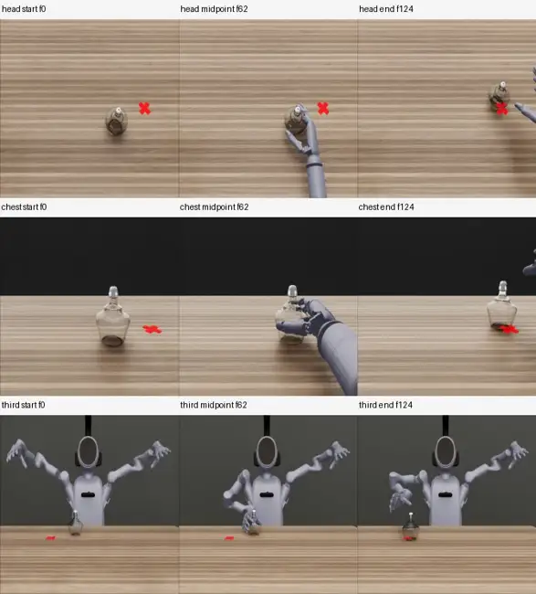
三视角起末帧均覆盖酒精灯和目标，胸部抓取时有手臂遮挡，第三视角物体偏小。未见样本物体截断。
完整可见帧占比：物体 UNKNOWN；目标 UNKNOWN。缺逐帧分割/遮挡标注，不报告伪精确百分比。中段为时间代理，抓取准确时刻待接触记录补证。
已验收方法：act / dp。图源：登记Native对齐训练数据首条；非旧原始示范图。
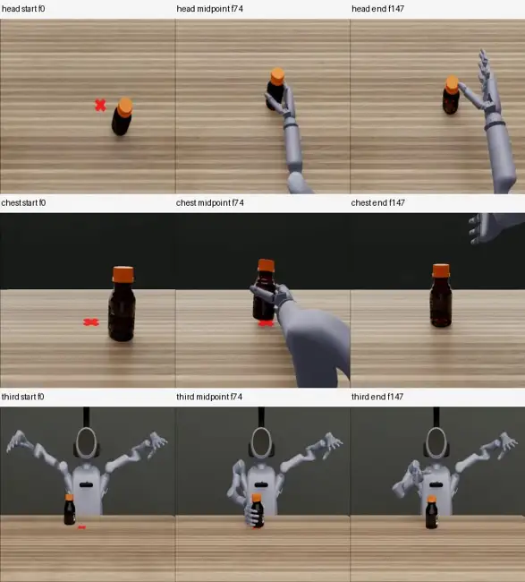
当前Native训练图的三机位在起末帧均覆盖物体及红色目标；抓取阶段头部/第三视角有手指遮挡，胸部相机未见旧源图那样的抬升出画。仅抽样判断。
完整可见帧占比：物体 UNKNOWN；目标 UNKNOWN。缺逐帧分割/遮挡标注，不报告伪精确百分比。中段为时间代理，抓取准确时刻待接触记录补证。
已验收方法：act / dp。图源：登记原始示范首条，未自动视为所有后续变体的逐checkpoint证据。
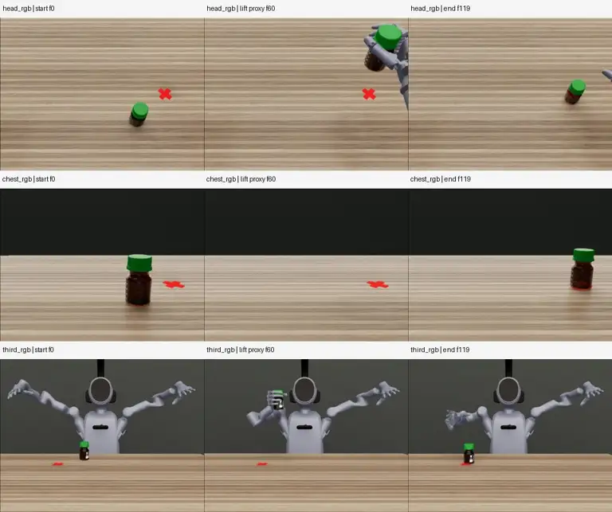
头部视角可见操作区域；第三视角物体较小，抓取时有手部遮挡。胸部视角在抬升时存在截断/出画风险，见逐物体说明。
完整可见帧占比：物体 UNKNOWN；目标 UNKNOWN。缺逐帧分割/遮挡标注，不报告伪精确百分比。中段为时间代理，抓取准确时刻待接触记录补证。
已验收方法：dp / act。图源：登记原始示范首条，未自动视为所有后续变体的逐checkpoint证据。
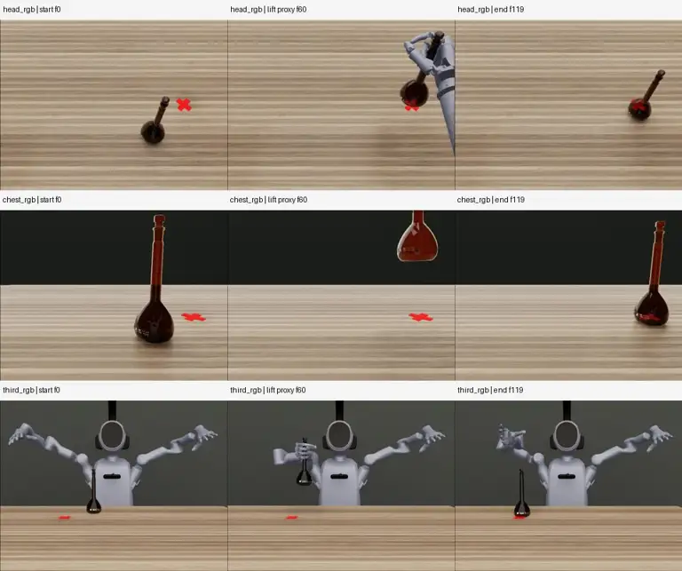
头部视角可见操作区域；第三视角物体较小，抓取时有手部遮挡。胸部视角在抬升时存在截断/出画风险，见逐物体说明。
完整可见帧占比：物体 UNKNOWN；目标 UNKNOWN。缺逐帧分割/遮挡标注，不报告伪精确百分比。中段为时间代理，抓取准确时刻待接触记录补证。
已验收方法：dp。图源：登记Native对齐训练数据首条；非旧原始示范图。
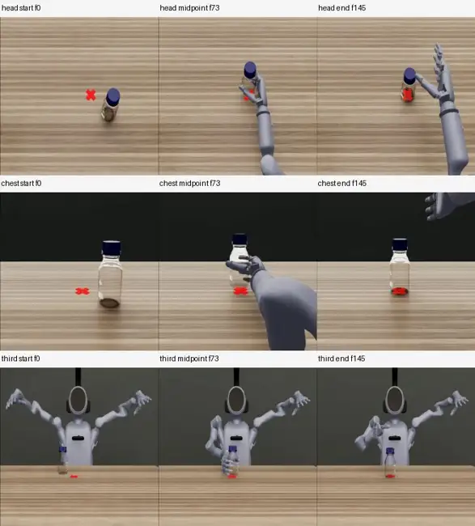
当前Native训练图的三机位在起末帧均覆盖物体及红色目标；抓取阶段头部/第三视角有手指遮挡，胸部相机未见旧源图那样的抬升出画。仅抽样判断。
完整可见帧占比：物体 UNKNOWN；目标 UNKNOWN。缺逐帧分割/遮挡标注，不报告伪精确百分比。中段为时间代理，抓取准确时刻待接触记录补证。
已验收方法：act / dp。图源：登记原始示范首条，未自动视为所有后续变体的逐checkpoint证据。
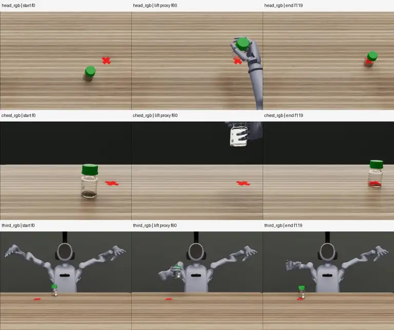
头部视角可见操作区域；第三视角物体较小，抓取时有手部遮挡。胸部视角在抬升时存在截断/出画风险，见逐物体说明。
完整可见帧占比：物体 UNKNOWN；目标 UNKNOWN。缺逐帧分割/遮挡标注，不报告伪精确百分比。中段为时间代理，抓取准确时刻待接触记录补证。
已验收方法：dp / act。图源：登记原始示范首条，未自动视为所有后续变体的逐checkpoint证据。
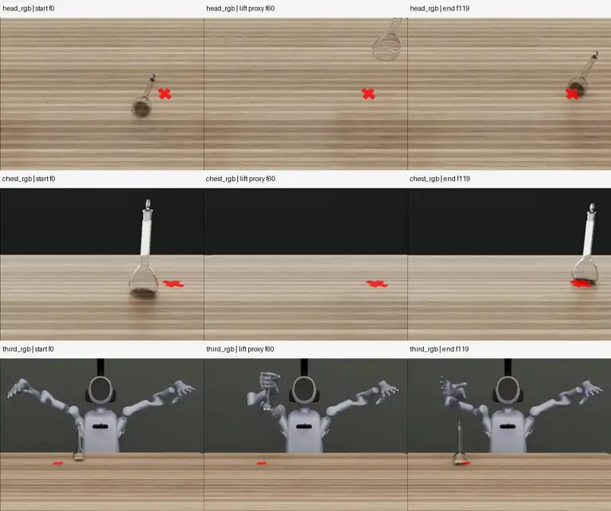
头部视角可见操作区域；第三视角物体较小，抓取时有手部遮挡。胸部视角在抬升时存在截断/出画风险，见逐物体说明。
完整可见帧占比：物体 UNKNOWN；目标 UNKNOWN。缺逐帧分割/遮挡标注，不报告伪精确百分比。中段为时间代理，抓取准确时刻待接触记录补证。
已验收方法：dp / act。图源：登记原始示范首条，未自动视为所有后续变体的逐checkpoint证据。
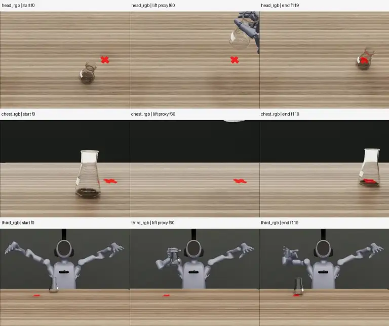
头部视角可见操作区域；第三视角物体较小，抓取时有手部遮挡。胸部视角在抬升时存在截断/出画风险，见逐物体说明。
完整可见帧占比：物体 UNKNOWN；目标 UNKNOWN。缺逐帧分割/遮挡标注，不报告伪精确百分比。中段为时间代理，抓取准确时刻待接触记录补证。
已验收方法：dp / act。图源：登记原始示范首条，未自动视为所有后续变体的逐checkpoint证据。
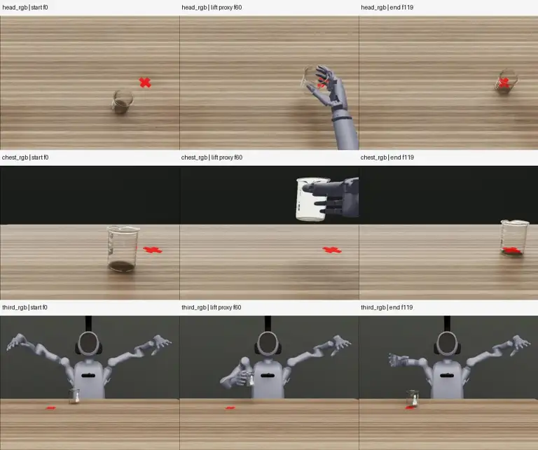
头部视角可见操作区域；第三视角物体较小，抓取时有手部遮挡。胸部视角在抬升时存在截断/出画风险，见逐物体说明。
完整可见帧占比：物体 UNKNOWN；目标 UNKNOWN。缺逐帧分割/遮挡标注，不报告伪精确百分比。中段为时间代理，抓取准确时刻待接触记录补证。
已验收方法：dp。图源：登记原始示范首条，未自动视为所有后续变体的逐checkpoint证据。
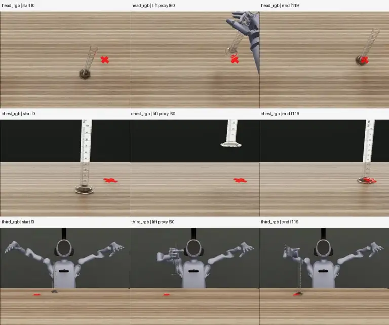
胸部相机的量筒顶部在样本首帧已截断，抬升时出画更明显；第三视角细长透明物体很小。头部视角可补充，但不可称每个视角全程完整可见。
完整可见帧占比：物体 UNKNOWN；目标 UNKNOWN。缺逐帧分割/遮挡标注，不报告伪精确百分比。中段为时间代理，抓取准确时刻待接触记录补证。
已验收方法：dp。图源：登记原始示范首条，未自动视为所有后续变体的逐checkpoint证据。
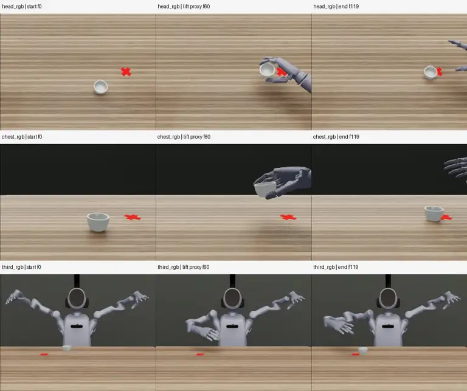
头部、胸部起末帧物体轮廓可见，抓取时手部遮挡；第三视角研钵偏小。未见样本物体截断。
完整可见帧占比：物体 UNKNOWN；目标 UNKNOWN。缺逐帧分割/遮挡标注，不报告伪精确百分比。中段为时间代理，抓取准确时刻待接触记录补证。
已验收方法：dp / act。图源：登记原始示范首条，未自动视为所有后续变体的逐checkpoint证据。
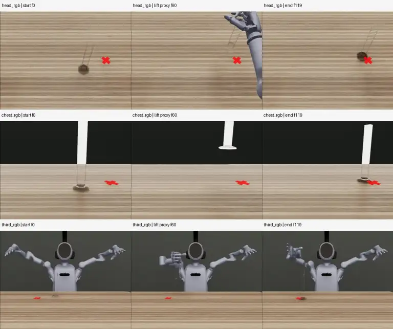
胸部相机的量筒顶部在样本首帧已截断，抬升时出画更明显；第三视角细长透明物体很小。头部视角可补充，但不可称每个视角全程完整可见。
完整可见帧占比：物体 UNKNOWN；目标 UNKNOWN。缺逐帧分割/遮挡标注，不报告伪精确百分比。中段为时间代理，抓取准确时刻待接触记录补证。
已验收方法：act / dp。图源：登记原始示范首条，未自动视为所有后续变体的逐checkpoint证据。
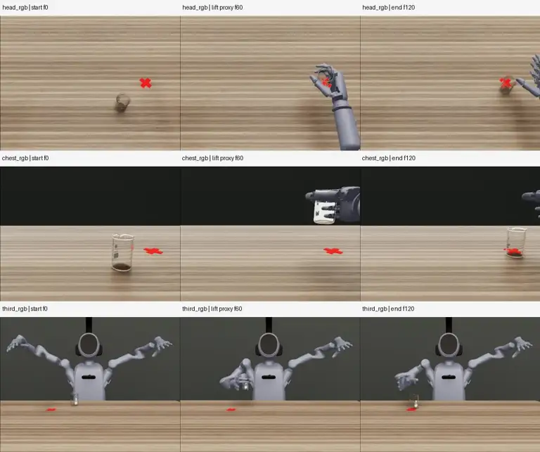
头部视角可见操作区域；第三视角物体较小，抓取时有手部遮挡。胸部视角在抬升时存在截断/出画风险，见逐物体说明。
完整可见帧占比：物体 UNKNOWN；目标 UNKNOWN。缺逐帧分割/遮挡标注，不报告伪精确百分比。中段为时间代理，抓取准确时刻待接触记录补证。